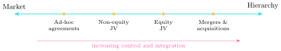

Definition
Transaction Cost Economics (New Institutional Economics, Williamson 1985): transactions — exchanges of goods and services, relations among firms, employees and units — are not governed only by the market, but by the internal organization too. The strategic goal is to minimize transaction costs: searching partners, negotiating, monitoring, enforcing and adapting contracts. Three variables make these costs more or less intense:
| Variable | Meaning | Pushes towards |
|---|---|---|
| Bounded rationality | contracts cannot foresee every case | hierarchy |
| Opportunism | partner may exploit contract gaps | hierarchy |
| Frequency | repetition justifies dedicated set-up | hybrid/hierarchy |
(Asset specificity — investments that lose value outside the relationship — is the further variable usually added to the list.)
Model
Not a binary choice between market and hierarchy: the market may be too unstable, the hierarchy too rigid, so management often chooses mixed forms. Strategic integration continuum (increasing control and integration):
Recent organizational trend — lean structures: resources concentrated on the core business (BPR, horizontal process structure); many activities outsourced (outsourcing, networks of firms); fewer hierarchical levels; short- and long-term strategic-operating relations with external firms (suppliers, customers, even competitors).
Worked example
Make: EUR 110 per component. Buy: quote EUR 95 + qualification, monitoring and expected disruption EUR 20 = EUR 115. Price alone says "buy", total cost says "make". If volumes are high and the part is custom (frequency + specificity), a long-term contract or equity JV may beat both pure options. See TCO.
Pitfall
Outsourcing moves work out but keeps coordination costs inside. Transaction costs are not the purchase price.
Recall
State the three variables, draw the market–hierarchy continuum with four intermediate forms, and list the four features of the lean organization.
Picture

Hybrid forms trade market flexibility for hierarchical control.